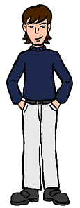

Full Name: Thomas Sloane
Current Age: 18
Siblings: Elsie
Parents: Angier and Katherine ("Kay") Sloane
Vocation: Freshman at Bromwell University
First Appearance: Jane's Addition
Tom is a member of one of Lawndale's wealthiest families. He goes to a prep school and looks every every inch the part of a "spoiled rich brat." That's where the stereotype ends, however, as his every action is designed to downplay the fact that he comes from a rich family (even going far as to drive a "junker" car... a rusted Ford Pinto at first, then a Jaguar that's in only slightly better shape). His rebellious streak even leads him to explore life on the "other side of the tracks," which is where he met Jane and Daria... an event that would eventually turn his world upside down.
Charming, intelligent, and a quick wit (with a sarcastic streak that's second to none), Tom's charms lead him to a relationship with Jane, then to one with Daria when he and Jane grew apart and he acted on his attraction to Daria... not exactly Tom's finest moment, though Daria did play a pretty significant role. They all reconciled their differences eventually, and Tom and Daria settled into a slow, steady relationship (and he even managed to stay friends with Jane).
From Tom's point of view, his relationship with Daria is definitely a challenge. He gets along well with her most of the time, but like most guys his age (well, any age, really), he tends to be somewhat clueless, and will say and do things that Daria takes the wrong way. Even with something isn't his fault, though, dealing with Daria seems to take an extraordinary amount of patience. To his credit, he appears to have dug in for the long haul, though how long a haul it is remains to be seen, what with graduation fast approaching.
Status at end of series:
Graduated from Fielding Preparatory Academy. Accepted into the freshman class at Bromwell University. Broke up with Daria after they both realized that they were headed in opposite directions in life, though they vowed to remain friends and keep each other updated on their lives.
|